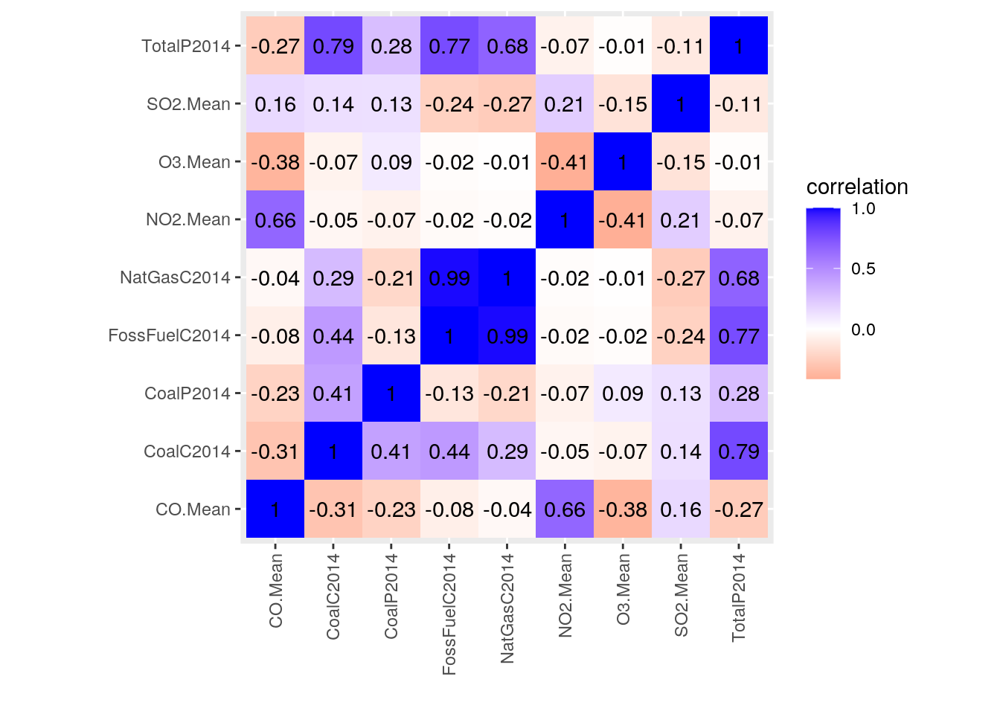
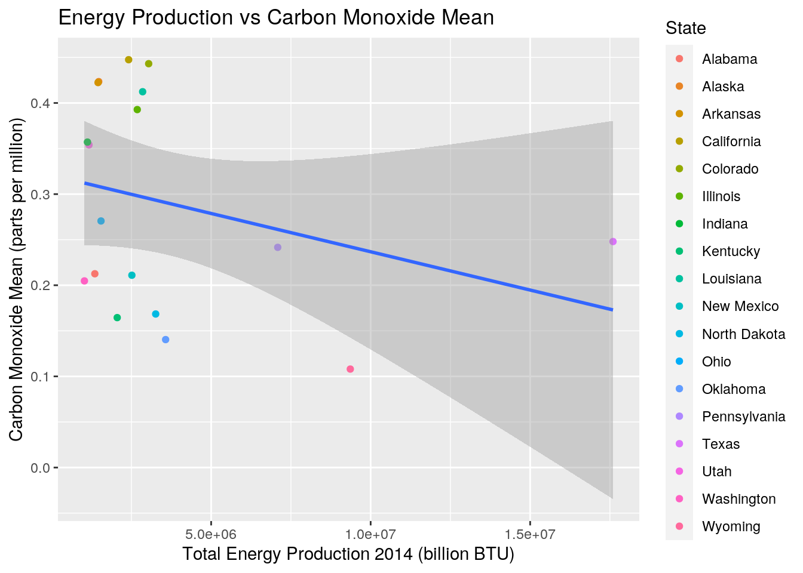
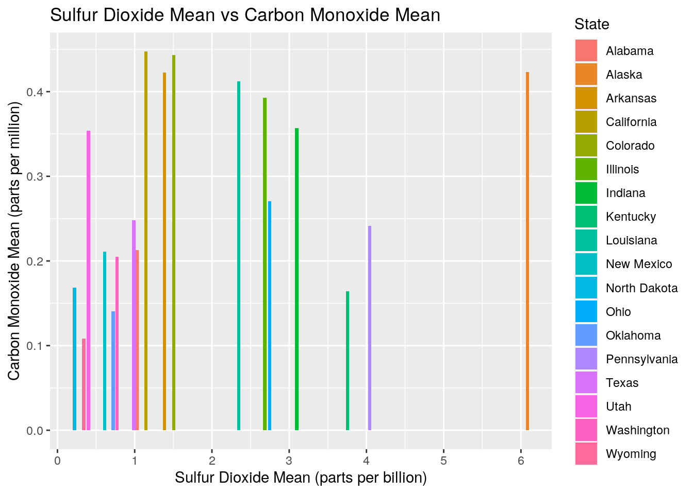
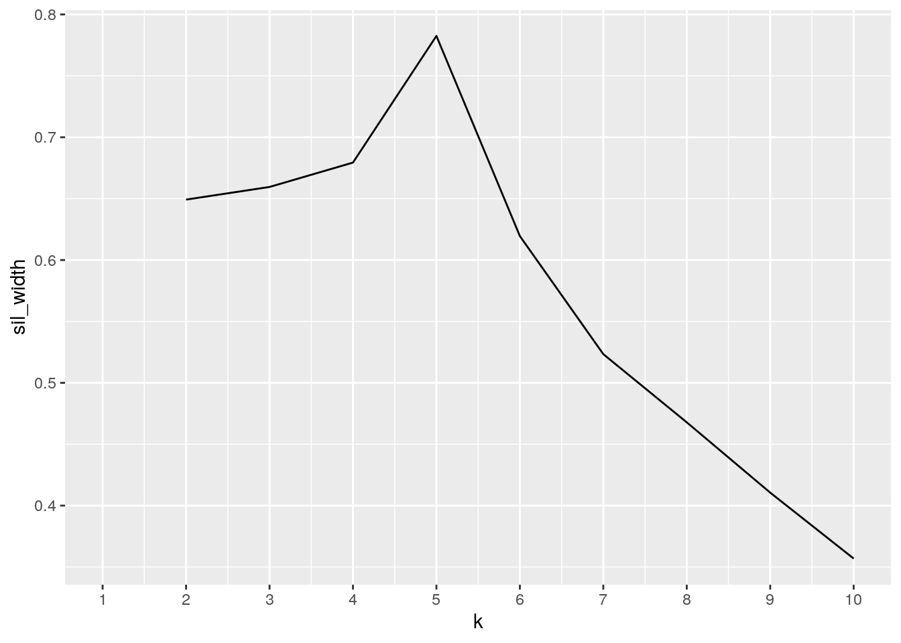
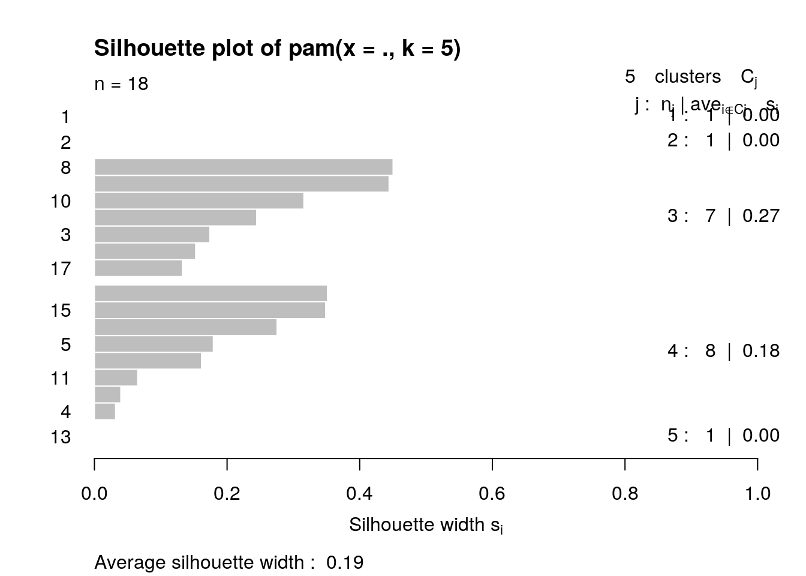
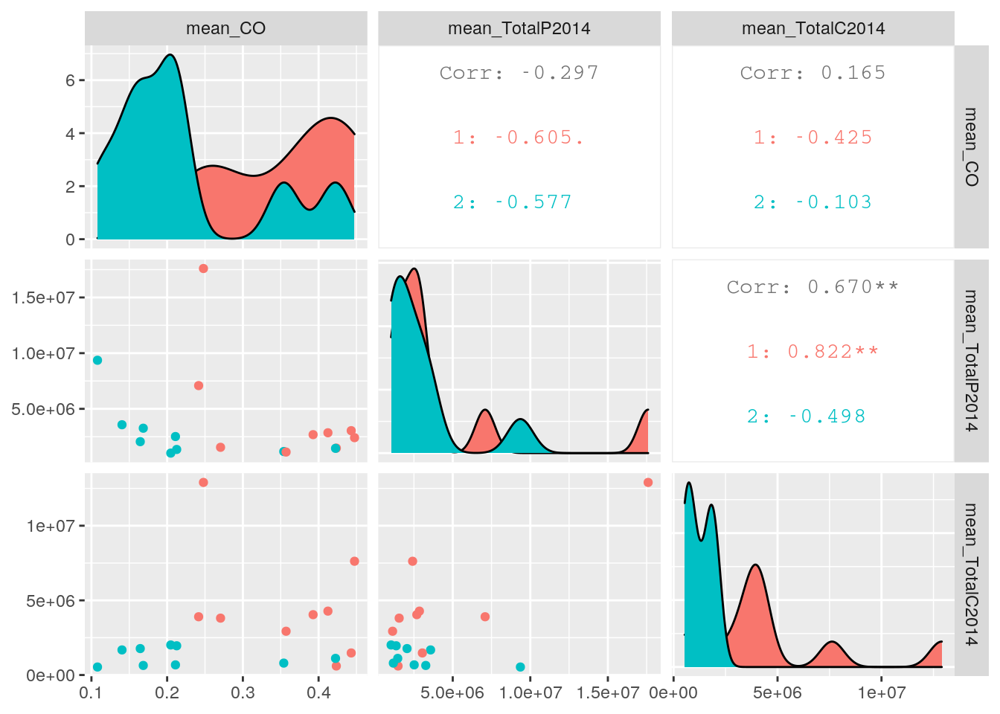

library(tidyverse)## ── Attaching packages ─────────────────────────────────────────────────────────── tidyverse 1.3.0 ──## ✓ ggplot2 3.3.2 ✓ purrr 0.3.4
## ✓ tibble 3.0.3 ✓ dplyr 1.0.1
## ✓ tidyr 1.1.1 ✓ stringr 1.4.0
## ✓ readr 1.3.1 ✓ forcats 0.5.0## ── Conflicts ────────────────────────────────────────────────────────────── tidyverse_conflicts() ──
## x dplyr::filter() masks stats::filter()
## x dplyr::lag() masks stats::lag()library(dplyr)
getwd()## [1] "/stor/home/aeq242/R/website/content/project"library("readr")
Pollution <- read.csv("/stor/home/aeq242/SDS348_Fall2020/Data/pollution_us_2000_2016.csv")
Energy <- read.csv("/stor/home/aeq242/Energy Census and Economic Data US 2010-2014.csv")## # A tibble: 38,426,542 x 31
## X State.Code County.Code Site.Num Address County City Date.Local
## <int> <int> <int> <int> <fct> <fct> <fct> <fct>
## 1 0 4 13 3002 1645 E… Maric… Phoe… 2000-01-01
## 2 0 4 13 3002 1645 E… Maric… Phoe… 2000-01-01
## 3 0 4 13 3002 1645 E… Maric… Phoe… 2000-01-01
## 4 0 4 13 3002 1645 E… Maric… Phoe… 2000-01-01
## 5 0 4 13 3002 1645 E… Maric… Phoe… 2000-01-01
## 6 0 4 13 3002 1645 E… Maric… Phoe… 2000-01-01
## 7 0 4 13 3002 1645 E… Maric… Phoe… 2000-01-01
## 8 0 4 13 3002 1645 E… Maric… Phoe… 2000-01-01
## 9 0 4 13 3002 1645 E… Maric… Phoe… 2000-01-01
## 10 0 4 13 3002 1645 E… Maric… Phoe… 2000-01-01
## # … with 38,426,532 more rows, and 23 more variables: NO2.Units <fct>,
## # NO2.Mean <dbl>, NO2.1st.Max.Value <dbl>, NO2.AQI <int>, O3.Units <fct>,
## # O3.Mean <dbl>, O3.1st.Max.Value <dbl>, O3.1st.Max.Hour <int>, O3.AQI <int>,
## # SO2.Units <fct>, SO2.Mean <dbl>, SO2.1st.Max.Value <dbl>,
## # SO2.1st.Max.Hour <int>, SO2.AQI <dbl>, CO.Units <fct>, CO.Mean <dbl>,
## # CO.1st.Max.Value <dbl>, CO.1st.Max.Hour <int>, CO.AQI <dbl>, `0` <fct>,
## # `11` <fct>, NO2.1st.Max.Hour <chr>, State <fct>## # A tibble: 104 x 193
## StateCodes Region Division Coast TotalC2010 TotalC2011 TotalC2012 TotalC2013
## <fct> <int> <int> <int> <int> <int> <int> <int>
## 1 AL 3 6 1 1931522 1905207 1879716 1919365
## 2 AL 3 6 1 1931522 1905207 1879716 1919365
## 3 AK 4 9 1 653221 653637 649341 621107
## 4 AK 4 9 1 653221 653637 649341 621107
## 5 AZ 4 8 0 1383531 1424944 1395839 1414383
## 6 AZ 4 8 0 1383531 1424944 1395839 1414383
## 7 AR 3 7 0 1120632 1122544 1067642 1096438
## 8 AR 3 7 0 1120632 1122544 1067642 1096438
## 9 CA 4 9 1 7760629 7777115 7564063 7665241
## 10 CA 4 9 1 7760629 7777115 7564063 7665241
## # … with 94 more rows, and 185 more variables: TotalC2014 <int>,
## # TotalP2010 <int>, TotalP2011 <int>, TotalP2012 <int>, TotalP2013 <int>,
## # TotalP2014 <int>, TotalE2010 <dbl>, TotalE2011 <dbl>, TotalE2012 <dbl>,
## # TotalE2013 <dbl>, TotalE2014 <dbl>, TotalPrice2010 <dbl>,
## # TotalPrice2011 <dbl>, TotalPrice2012 <dbl>, TotalPrice2013 <dbl>,
## # TotalPrice2014 <dbl>, TotalC10.11 <dbl>, TotalC11.12 <dbl>,
## # TotalC12.13 <dbl>, TotalC13.14 <dbl>, TotalP10.11 <dbl>, TotalP11.12 <dbl>,
## # TotalP12.13 <dbl>, TotalP13.14 <dbl>, TotalE10.11 <dbl>, TotalE11.12 <dbl>,
## # TotalE12.13 <dbl>, TotalE13.14 <dbl>, TotalPrice10.11 <dbl>,
## # TotalPrice11.12 <dbl>, TotalPrice12.13 <dbl>, TotalPrice13.14 <dbl>,
## # BiomassC2010 <int>, BiomassC2011 <int>, BiomassC2012 <int>,
## # BiomassC2013 <int>, BiomassC2014 <int>, CoalC2010 <int>, CoalC2011 <int>,
## # CoalC2012 <int>, CoalC2013 <int>, CoalC2014 <int>, CoalP2010 <int>,
## # CoalP2011 <int>, CoalP2012 <int>, CoalP2013 <int>, CoalP2014 <int>,
## # CoalE2010 <dbl>, CoalE2011 <dbl>, CoalE2012 <dbl>, CoalE2013 <dbl>,
## # CoalE2014 <dbl>, CoalPrice2010 <dbl>, CoalPrice2011 <dbl>,
## # CoalPrice2012 <dbl>, CoalPrice2013 <dbl>, CoalPrice2014 <dbl>,
## # ElecC2010 <int>, ElecC2011 <int>, ElecC2012 <int>, ElecC2013 <int>,
## # ElecC2014 <int>, ElecE2010 <dbl>, ElecE2011 <dbl>, ElecE2012 <dbl>,
## # ElecE2013 <dbl>, ElecE2014 <dbl>, ElecPrice2010 <dbl>, ElecPrice2011 <dbl>,
## # ElecPrice2012 <dbl>, ElecPrice2013 <dbl>, ElecPrice2014 <dbl>,
## # FossFuelC2010 <int>, FossFuelC2011 <int>, FossFuelC2012 <int>,
## # FossFuelC2013 <int>, FossFuelC2014 <int>, GeoC2010 <int>, GeoC2011 <int>,
## # GeoC2012 <int>, GeoC2013 <int>, GeoC2014 <int>, GeoP2010 <int>,
## # GeoP2011 <int>, GeoP2012 <int>, GeoP2013 <int>, GeoP2014 <int>,
## # HydroC2010 <int>, HydroC2011 <int>, HydroC2012 <int>, HydroC2013 <int>,
## # HydroC2014 <int>, HydroP2010 <int>, HydroP2011 <int>, HydroP2012 <int>,
## # HydroP2013 <int>, HydroP2014 <int>, NatGasC2010 <int>, NatGasC2011 <int>,
## # NatGasC2012 <int>, …My datasets, Energy and Pollution, were already tidy from the start by containing a variable that matched its respective observation in its own column. By using pivot_wider, I was able to untidy them by creating a wider dataset, which made the observations from one variable receive their own columns as if they were variables. Then the observations from the second variable set became data for the rows of these new columns. The unnecessary extra columns were then made tidy by using pivot_longer so that the columns for the observations received their own column.
EnergyandPollution <- Pollution %>% full_join(Energy, by = "State")To combine my Pollution and Energy dataset, I used full_join and joined them by their common column which was State. There were 52 observations and 192 variables for the Energy dataset. For the Pollution data, there was a total of 1,746,661 observations and 29 variables. When combining both sets of data we get: 1,746,668 observations and 220 variables. No observations were dropped, all the data was retained! I used the code full_join to merge the datasets because my variables were not in the same position. Therefore, there were Na's that were introduced when there wasn't a match between the two datasets resulting in a slightly bigger observation size.
FilteredData <- EnergyandPollution %>% filter(CO.Mean > 0 & str_detect(Date.Local, "2014") & TotalP2014 >= 1000000 & State!= "United State") %>% arrange(desc(TotalP2014), desc(CO.Mean)) %>% mutate(Combined.Gasses = NO2.Mean + O3.Mean +SO2.Mean +CO.Mean) %>% select(State, City, Date.Local, CO.Mean, TotalP2014, Combined.Gasses)
head(FilteredData)## State City Date.Local CO.Mean TotalP2014 Combined.Gasses
## 1 Texas El Paso 2014-11-29 1.083333 17597105 28.00985
## 2 Texas El Paso 2014-11-29 1.083333 17597105 27.90799
## 3 Texas El Paso 2014-01-07 1.067947 17597105 36.61239
## 4 Texas El Paso 2014-01-07 1.067947 17597105 36.84334
## 5 Texas El Paso 2014-12-01 1.025000 17597105 28.55328
## 6 Texas El Paso 2014-12-01 1.025000 17597105 28.47564EPMean <- EnergyandPollution %>% group_by(State) %>% summarize(mean_CO = mean(CO.Mean, na.rm = T), mean_NO2 = mean(NO2.Mean, na.rm=T), mean_O3 = mean(O3.Mean, na.rm = T), mean_SO2 = mean(SO2.Mean, na.rm = T), mean_TotalP2014 = mean(TotalP2014, na.rm = T), mean_TotalC2014 = mean(TotalC2014, na.rm = T), mean_CoalC2014 = mean(CoalC2014, na.rm = T), mean_CoalP2014 = mean(CoalP2014, na.rm = T), mean_NatGasC2014 = mean(NatGasC2014, na.rm = T), mean_FossFuelC2014 = mean(FossFuelC2014, na.rm = T))## `summarise()` ungrouping output (override with `.groups` argument)EPMean## # A tibble: 54 x 11
## State mean_CO mean_NO2 mean_O3 mean_SO2 mean_TotalP2014 mean_TotalC2014
## <fct> <dbl> <dbl> <dbl> <dbl> <dbl> <dbl>
## 1 Alab… 0.213 9.41 0.0246 1.03 1353725 1958221
## 2 Alas… 0.423 11.3 0.0128 6.08 1475129 603119
## 3 Ariz… 0.491 19.1 0.0250 1.36 635050 1422590
## 4 Arka… 0.422 9.75 0.0262 1.38 1454325 1114409
## 5 Cali… 0.447 13.7 0.0261 1.15 2413494 7620082
## 6 Colo… 0.443 19.6 0.0236 1.51 3041634 1477177
## 7 Conn… 0.251 8.99 0.0289 0.912 197271 750019
## 8 Coun… 0.854 20.3 0.0219 1.95 NaN NaN
## 9 Dela… 0.262 11.6 0.0265 1.01 4189 274013
## 10 Dist… 0.790 17.7 0.0242 4.21 NaN NaN
## # … with 44 more rows, and 4 more variables: mean_CoalC2014 <dbl>,
## # mean_CoalP2014 <dbl>, mean_NatGasC2014 <dbl>, mean_FossFuelC2014 <dbl>EnergyandPollution %>% group_by(State) %>% summarize(max_CO = max(CO.Mean, na.rm = T), max_NO2 = max(NO2.Mean, na.rm=T), max_O3 = max(O3.Mean, na.rm = T), max_SO2 = max(SO2.Mean, na.rm = T), max_TotalP2014 = max(TotalP2014, na.rm = T), max_TotalC2014 = max(TotalC2014, na.rm = T), max_CoalC2014 = max(CoalC2014, na.rm = T), max_CoalP2014 = max(CoalP2014, na.rm = T), max_NatGasC2014 = max(NatGasC2014, na.rm = T), max_FossFuelC2014 = max(FossFuelC2014, na.rm = T))## `summarise()` ungrouping output (override with `.groups` argument)## # A tibble: 54 x 11
## State max_CO max_NO2 max_O3 max_SO2 max_TotalP2014 max_TotalC2014
## <fct> <dbl> <dbl> <dbl> <dbl> <dbl> <dbl>
## 1 Alab… 0.706 58.6 0.0458 9.1 1353725 1958221
## 2 Alas… 2.03 49.8 0.0390 31.5 1475129 603119
## 3 Ariz… 3.58 140. 0.0632 19.4 635050 1422590
## 4 Arka… 1.59 33.7 0.0627 10.4 1454325 1114409
## 5 Cali… 7.51 98.1 0.0862 40.3 2413494 7620082
## 6 Colo… 2.48 92 0.0619 21.1 3041634 1477177
## 7 Conn… 1.25 53.4 0.0685 28.5 197271 750019
## 8 Coun… 6.53 75.1 0.0616 13.8 -Inf -Inf
## 9 Dela… 0.85 36.5 0.0619 4.58 4189 274013
## 10 Dist… 3.53 65.2 0.0705 42.9 -Inf -Inf
## # … with 44 more rows, and 4 more variables: max_CoalC2014 <dbl>,
## # max_CoalP2014 <dbl>, max_NatGasC2014 <dbl>, max_FossFuelC2014 <dbl>EnergyandPollution %>% group_by(State) %>% summarize(min_CO = min(CO.Mean, na.rm = T), min_NO2 = min(NO2.Mean, na.rm=T), min_O3 = min(O3.Mean, na.rm = T), min_SO2 = min(SO2.Mean, na.rm = T), min_TotalP2014 = min(TotalP2014, na.rm = T), min_TotalC2014 = min(TotalC2014, na.rm = T), min_CoalC2014 = min(CoalC2014, na.rm = T), min_CoalP2014 = min(CoalP2014, na.rm = T), min_NatGasC2014 = min(NatGasC2014, na.rm = T), min_FossFuelC2014 = min(FossFuelC2014, na.rm = T))## `summarise()` ungrouping output (override with `.groups` argument)## # A tibble: 54 x 11
## State min_CO min_NO2 min_O3 min_SO2 min_TotalP2014 min_TotalC2014
## <fct> <dbl> <dbl> <dbl> <dbl> <dbl> <dbl>
## 1 Alab… 0.0133 1.72 0. -0.15 1353725 1958221
## 2 Alas… 0.0858 0.558 0. 0.283 1475129 603119
## 3 Ariz… 0 0 5.00e-4 -0.0333 635050 1422590
## 4 Arka… 0 0.0417 4.20e-5 0 1454325 1114409
## 5 Cali… -0.4 -1.87 0. -1.52 2413494 7620082
## 6 Colo… -0.196 -0.0952 0. -1 3041634 1477177
## 7 Conn… 0.0292 -1.19 0. -0.167 197271 750019
## 8 Coun… 0 1.91 0. 0 Inf Inf
## 9 Dela… 0.0661 0.833 8.30e-5 0 4189 274013
## 10 Dist… -0.1 0.0417 1.25e-4 -0.953 Inf Inf
## # … with 44 more rows, and 4 more variables: min_CoalC2014 <dbl>,
## # min_CoalP2014 <dbl>, min_NatGasC2014 <dbl>, min_FossFuelC2014 <dbl>EnergyandPollution %>% group_by(State) %>% summarize(median_CO = median(CO.Mean, na.rm = T), median_NO2 = median(NO2.Mean, na.rm=T), median_O3 = median(O3.Mean, na.rm = T), median_SO2 = median(SO2.Mean, na.rm = T), median_TotalP2014 = median(TotalP2014, na.rm = T), median_TotalC2014 = median(TotalC2014, na.rm = T), median_CoalC2014 = median(CoalC2014, na.rm = T), median_CoalP2014 = median(CoalP2014, na.rm = T), median_NatGasC2014 = median(NatGasC2014, na.rm = T), median_FossFuelC2014 = median(FossFuelC2014, na.rm = T))## `summarise()` ungrouping output (override with `.groups` argument)## # A tibble: 54 x 11
## State median_CO median_NO2 median_O3 median_SO2 median_TotalP20…
## <fct> <dbl> <dbl> <dbl> <dbl> <dbl>
## 1 Alab… 0.194 8.69 0.0246 0.633 1353725
## 2 Alas… 0.307 7.44 0.0112 4.16 1475129
## 3 Ariz… 0.388 17.9 0.0248 1.08 635050
## 4 Arka… 0.396 8.87 0.0260 1.21 1454325
## 5 Cali… 0.343 10.9 0.026 0.76 2413494
## 6 Colo… 0.383 18.9 0.0238 1.1 3041634
## 7 Conn… 0.208 7.42 0.0291 0.405 197271
## 8 Coun… 0.626 18.5 0.0212 1.17 NA
## 9 Dela… 0.233 10.1 0.0269 0.833 4189
## 10 Dist… 0.717 16.9 0.0236 3.42 NA
## # … with 44 more rows, and 5 more variables: median_TotalC2014 <dbl>,
## # median_CoalC2014 <dbl>, median_CoalP2014 <dbl>, median_NatGasC2014 <dbl>,
## # median_FossFuelC2014 <dbl>EnergyandPollution %>% group_by(State) %>% summarize(distinct_CO = n_distinct(CO.Mean, na.rm = T), distinct_NO2 = n_distinct(NO2.Mean, na.rm=T), distinct_O3 = n_distinct(O3.Mean, na.rm = T), distinct_SO2 = n_distinct(SO2.Mean, na.rm = T), distinct_TotalP2014 = n_distinct(TotalP2014, na.rm = T), distinct_TotalC2014 = n_distinct(TotalC2014, na.rm = T), max_CoalC2014 = n_distinct(CoalC2014, na.rm = T), distinct_CoalP2014 = n_distinct(CoalP2014, na.rm = T), distinct_NatGasC2014 = n_distinct(NatGasC2014, na.rm = T), distinct_FossFuelC2014 = n_distinct(FossFuelC2014, na.rm = T))## `summarise()` ungrouping output (override with `.groups` argument)## # A tibble: 54 x 11
## State distinct_CO distinct_NO2 distinct_O3 distinct_SO2 distinct_TotalP…
## <fct> <int> <int> <int> <int> <int>
## 1 Alab… 667 726 505 793 1
## 2 Alas… 615 478 351 845 1
## 3 Ariz… 3352 4621 1516 1964 1
## 4 Arka… 2170 1975 930 1285 1
## 5 Cali… 12923 19935 6755 5782 1
## 6 Colo… 1515 3768 1438 2049 1
## 7 Conn… 3182 2355 1557 2286 1
## 8 Coun… 1900 1734 1077 1638 0
## 9 Dela… 987 821 623 709 1
## 10 Dist… 2377 2522 1314 2881 0
## # … with 44 more rows, and 5 more variables: distinct_TotalC2014 <int>,
## # max_CoalC2014 <int>, distinct_CoalP2014 <int>, distinct_NatGasC2014 <int>,
## # distinct_FossFuelC2014 <int>EnergyandPollution %>% group_by(State, City) %>% summarize(mean_CO = mean(CO.Mean, na.rm = T), max_CO = max(CO.Mean, na.rm= T))## `summarise()` regrouping output by 'State' (override with `.groups` argument)## # A tibble: 172 x 4
## # Groups: State [54]
## State City mean_CO max_CO
## <fct> <fct> <dbl> <dbl>
## 1 Alabama Birmingham 0.213 0.706
## 2 Alaska Fairbanks 0.423 2.03
## 3 Arizona Phoenix 0.582 3.58
## 4 Arizona Scottsdale 0.582 2.15
## 5 Arizona Tucson 0.307 1.36
## 6 Arkansas North Little Rock 0.422 1.59
## 7 California Arden-Arcade 0.404 2.85
## 8 California Bakersfield 0.826 2.26
## 9 California Benicia 0.282 0.667
## 10 California Berkeley 0.308 1.19
## # … with 162 more rowslibrary(tibble)
untidycor <- EnergyandPollution %>% filter(CO.Mean > 0 & str_detect(Date.Local, "2014") & TotalP2014 >= 1000000 & State!= "United State") %>% arrange(desc(TotalP2014), desc(CO.Mean))%>% select(State, City, Date.Local, CO.Mean, TotalP2014, CoalP2014, CoalC2014, FossFuelC2014, NO2.Mean, O3.Mean, SO2.Mean, NatGasC2014)
CorEP <- untidycor %>% select_if(is.numeric) %>% cor(use = "pair")
cordata <- CorEP %>% as.data.frame %>% rownames_to_column("var1") %>% pivot_longer(-1, names_to = "var2", values_to = "correlation")
cordata## # A tibble: 81 x 3
## var1 var2 correlation
## <chr> <chr> <dbl>
## 1 CO.Mean CO.Mean 1
## 2 CO.Mean TotalP2014 -0.265
## 3 CO.Mean CoalP2014 -0.229
## 4 CO.Mean CoalC2014 -0.306
## 5 CO.Mean FossFuelC2014 -0.0836
## 6 CO.Mean NO2.Mean 0.665
## 7 CO.Mean O3.Mean -0.385
## 8 CO.Mean SO2.Mean 0.162
## 9 CO.Mean NatGasC2014 -0.0352
## 10 TotalP2014 CO.Mean -0.265
## # … with 71 more rowsIn the combined dataset, EneryandPollution, we want to look at a similar time period for the individual states. Since we are using the Total Energy Produced in 2014, we filtered out the year 2014 from Date.Local from pollution as a way to compare the levels of monoxide in relation to the amount of energy created. However, we remove the observation "United States" so we are only left with individual observations by state. Additionally, we used the code "arrange" in descending order to see which state is producing the most Energy and which state has the most Carbon Monoxide levels, resulting in Texas! But, we want to compare the correlation of the greenhouse gasses, as well, to the total production of energy. We do this by using the code mutate and add the means of all the gasses to create the column, Combined.Gasses. Now, we are able to select the data we will be focusing on by using select.
Each state had multiple observations of means for each gas (NO2, O3, SO2, and CO) and I wanted to take the average of all the means for each state to end up with a single value that represented the mean of the state altogether. However, I also wanted to compare how this correlated with energy consumption, energy production, coal production, coal consumption, and natural gas consumption. To accomplish this, I used group_by to link the states with their respective observation and summarize to take the : mean, max, min, median and distinct of each of these variables. Looking through our data, we can see that NO2 had the highest mean, median, and maximum for all states. The gas with minimum levels for all states was SO2. Each state had many distinct observations for the gasses. Lastly, for our correlation test, we had to filter certain variables in order for the code to run. This is because, our original dataset was too large, with multiple numeric variables that were unnecessary to run in a correlation such as price, country code, deaths and rebirths. As a result, we found that there is a strong correlation with Fossil Fuel consumption, Energy Production and Natural Gas consumption. But the levels of gasses in the atmosphere do not directly correlate.
library(ggplot2)
cordata %>% ggplot(aes(var1,var2,fill= correlation)) + geom_tile() + geom_text(aes(label = round(correlation,2))) + xlab("") + ylab("") + coord_fixed() + scale_fill_gradient2(low = "red", mid = "white", high = "blue") + theme(axis.text.x = element_text(angle = 90, vjust = 0.5, hjust = 1)) 
smalldata <- EPMean %>% filter(mean_CO > 0 & mean_TotalP2014 >= 1000000 & State!= "United State" & State!="District of Columbia" & State!="Mississippi" & State!="Montana" & State!="Nebraska" & State!="Vermont" & State!="West Virginia") %>% arrange(desc(mean_TotalP2014), desc(mean_CO)) %>% select(State, mean_CO, mean_TotalP2014, mean_TotalC2014, mean_NatGasC2014, mean_NO2, mean_O3, mean_SO2)
ggplot(smalldata, aes(mean_TotalP2014, mean_CO)) + geom_point(aes(color = State)) + geom_smooth(method = "lm") + ggtitle("Energy Production vs Carbon Monoxide Mean") + xlab("Total Energy Production 2014 (billion BTU)") + ylab("Carbon Monoxide Mean (parts per million)")## `geom_smooth()` using formula 'y ~ x'
ggplot(smalldata, aes(x= mean_SO2, mean_CO, fill = State)) + geom_bar(stat = "summary", position = 'dodge') + scale_x_continuous(breaks = seq(0,7,1))+ggtitle("Sulfur Dioxide Mean vs Carbon Monoxide Mean") + xlab("Sulfur Dioxide Mean (parts per billion)") + ylab("Carbon Monoxide Mean (parts per million)")## No summary function supplied, defaulting to `mean_se()`
Creating a correlation Heatmap, we can see the negative and positive correlation in our variables. As we can see, the production of Energy in 2014 does not seem to correlate with the levels of gasses in the atmosphere but positively correlate with the consumption of Fossil Fuels, Coal and Natural gasses by having values of 0.5 or greater. We know this by comparing their values from the scale 1.0 to -1.0, where 1 means it correlates completely and -1 means it correlates in opposite directions. Thus, using our heatmap we can see how the level of gasses correlate to one another, the mean of Carbon Monoxide positively correlating at 0.66 with the mean of Nitrogen Dioxide. Looking at the Total Production of Energy in 2014 in comparison to the Mean Carbon Monoxide, there is an opposite relationship of -0.27. This unexpected correlation might be due to the population size in that state, land size, where the sample was taken from, and other factors that influence the atmosphere.
In our scatterplot, we compared the Total Energy Production in 2014 to the Mean Carbon Monoxide levels in each state. Because our original correlation dataset was still too large to form a coherent plot, I used the mean of each state to only get a single observation per state rather than having multiple states with many numeric observations. Thus, our plot shows how there is a negative trend line, indicating that the level of carbon monoxide in the atmosphere is negatively related to the production of energy. However, we can see that some states do have an extremely high production of energy and levels of monoxide (Texas) but they are considered outliers.
Our third plot we compared the level of Carbon Monoxide to the level of Sulfur Dioxide as a way to compare the relationship between two gasses. The bar graph indicates that there is no discernible relationship between the gasses per state in the atmosphere. This means that because there is a high level of Carbon Monoxide in the atmopshere for that state, does not mean that there will be a high or low level of sulfur dioxide. For instance, California has a low level of Sulfur Dioxoide but one of the highest level of Carbon Monoxide. Alaska differs from California where it has a greater amount of Sulfur Dioxide and Carbon Monoxide.
library(GGally)## Registered S3 method overwritten by 'GGally':
## method from
## +.gg ggplot2library(cluster)
library(plotly)##
## Attaching package: 'plotly'## The following object is masked from 'package:ggplot2':
##
## last_plot## The following object is masked from 'package:stats':
##
## filter## The following object is masked from 'package:graphics':
##
## layoutclustereddata <- smalldata %>% select(-State)
pam1 <- clustereddata %>% scale %>% pam(5)
pam1## Medoids:
## ID mean_CO mean_TotalP2014 mean_TotalC2014 mean_NatGasC2014
## [1,] 1 -0.3644295 3.4073274 3.2266152 3.2509323
## [2,] 2 -1.5735178 1.3962561 -0.7752383 -0.7353352
## [3,] 7 1.0559382 -0.1933248 0.4365379 0.6549860
## [4,] 15 -0.6698675 -0.5593037 -0.3147785 -0.2369556
## [5,] 13 1.1517621 -0.5296568 -0.7533881 -0.5517095
## mean_NO2 mean_O3 mean_SO2
## [1,] 0.070165611 -0.1114985 -0.5632431
## [2,] -2.133175604 2.1772091 -0.9707276
## [3,] 0.645057524 -0.5607752 0.2915683
## [4,] -0.509032620 -0.3265559 -0.5339511
## [5,] -0.003967718 -2.5246893 2.6452791
## Clustering vector:
## [1] 1 2 3 4 4 3 3 3 4 3 4 3 5 4 4 4 3 4
## Objective function:
## build swap
## 1.252686 1.222837
##
## Available components:
## [1] "medoids" "id.med" "clustering" "objective" "isolation"
## [6] "clusinfo" "silinfo" "diss" "call" "data"clustpam <- clustereddata %>% mutate(cluster = as.factor(pam1$clustering))
sil_width<-vector()
for(i in 2:10){
pam_fit <- pam(clustereddata, diss = TRUE, k = i)
sil_width[i] <- pam_fit$silinfo$avg.width
}
ggplot()+geom_line(aes(x=1:10,y=sil_width))+scale_x_continuous(name="k",breaks=1:10)
plot(pam1, which = 2) 
clustpam%>%plot_ly(x= ~mean_CO, y = ~mean_TotalP2014, z = ~mean_NO2, color= ~cluster,
type = "scatter3d", mode = "markers") %>%
layout(autosize = F, width = 900, height = 400)pam2 <- clustereddata %>% scale %>% pam(2)
clustpam1 <- clustereddata %>% mutate(cluster = as.factor(pam2$clustering))
ggpairs(clustpam1, columns = 1:3, aes(color = cluster))
In this section, I created a separated dataset by taking EPMean, which we created a while ago as a way to get a single observation per state rather than having multiple states with many numeric observations and selected only the numerical variables I will be focusing on by selecting States out and naming it clustereddata.Then I ran a cluster analysis using "pam" resulting in a table of Medoids, a Clustering vector, Objective function, and Available components. Next I checked the number of clusters in my data, using the silhouette method which resulted in the optimal number of clusters being 5. We created an empty vector and used a "for" function to create a pamfit for the cluster data. Then we were able to use ggplot with ten breaks in the x-axis to identify how many number of clusters was optimal. Furthermore, by running the code "pam1" and scaling it, I got an average silhouette width of 0.19 where there is no substantial structure found.
Lastly, by taking the 3 numerical variables in my dataset, mean_NO2, mean_TotalP2014, and mean_CO, I created a 3D visual with x,y, and z planes using plotly. This 3D model illustrates how there are only 5 clusters, indicating how there is no discernible pattern or cluster formation. It is difficult to interpret and could be due to the large geography of the US and where the atmospheric samples were taken. For instance, comparing the regions of the United States, there are many states with different elevations and population densities that contribute to the amount of gasses in the air. This would account as to why our goodness of fit test gave an average silhouette width of 0.19 since there was no substantial structure with these clusters.